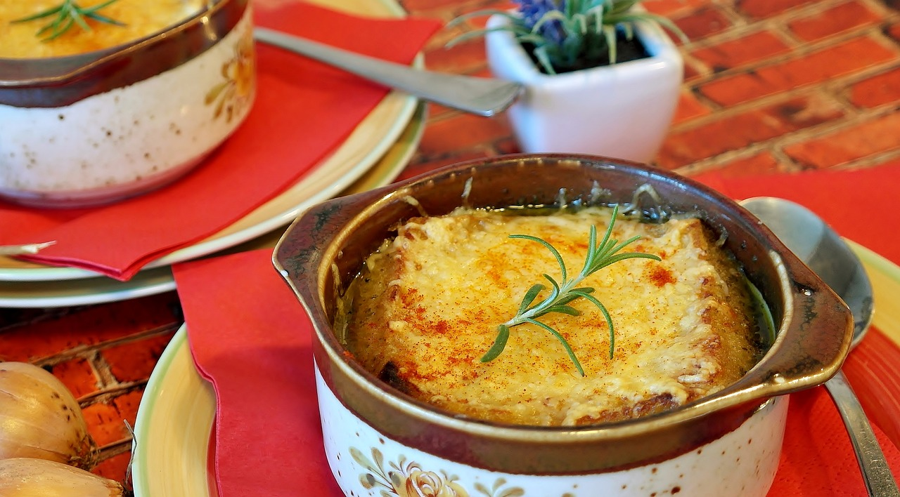
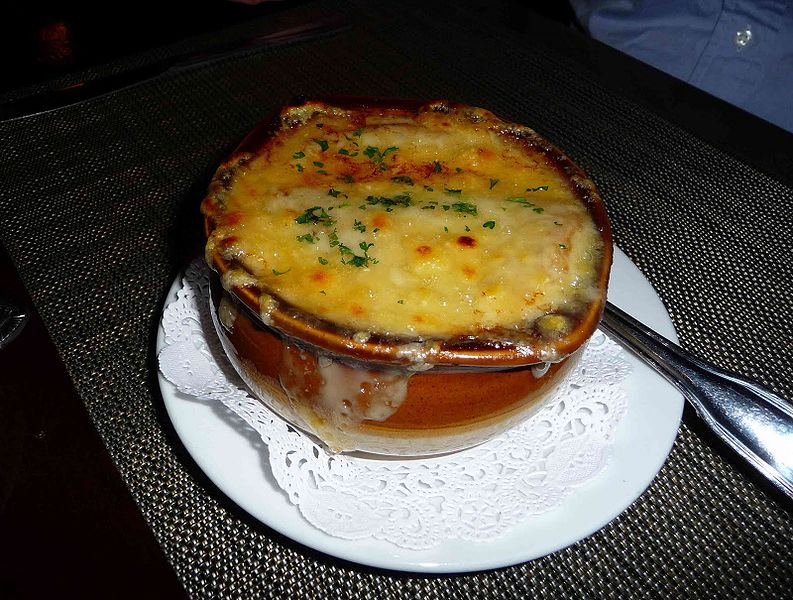
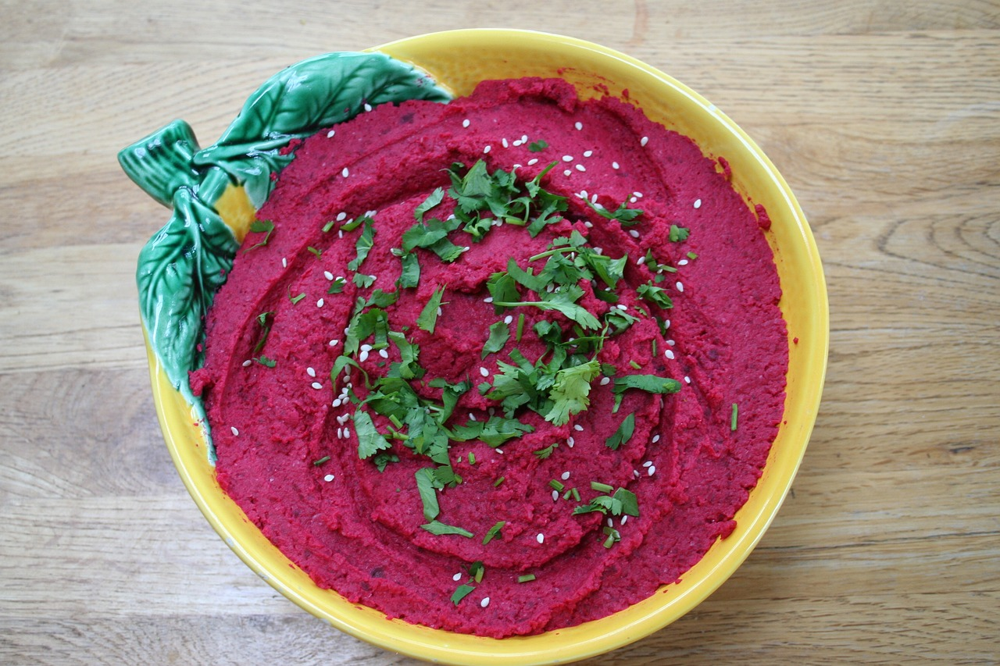
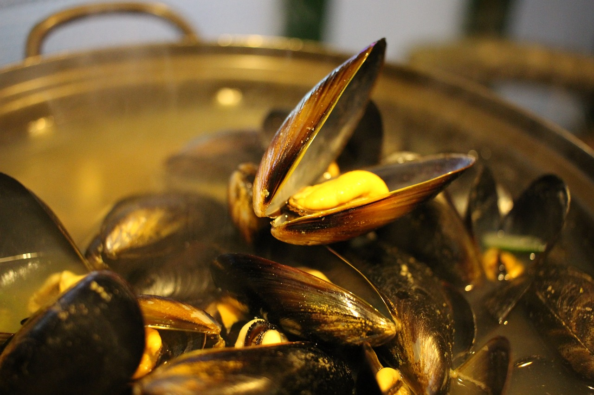
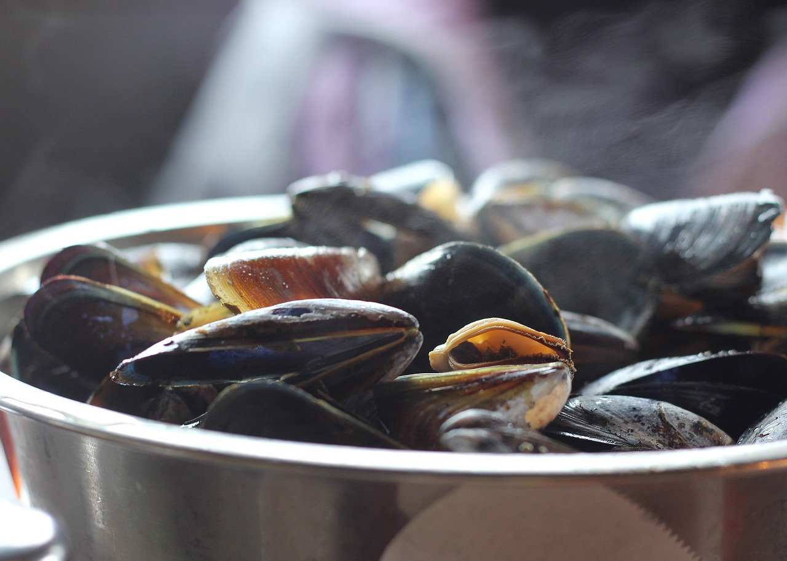

ENTRANTES
Postres
Plato principal
<-- Inicio
SOPA DE CEBOLLA
 - Tiempo: 45 min.
- Para: 2 personas
| Ingredientes | Cantidad |
|---|---|
| Aceite de oliva | -->4 cucharadas |
| Cebolla | -->3 cebollas medinas |
| Caldo vegetal | -->Un litro |
| Sal marina | -->media cucharadita |
| Pimienta molida | -->al gusto |
| Pan integral | -->2 rosajas |
| Queso fundente |
Paso 1: En una olla poner el aceite de oliva virgen extra a fuego medio-bajo. Añadir las cebollas cortadas en juliana muy fina o en medias rodajas finas. No añadimos azúcar como en la receta original, ni tampoco vino, ya que podemos obtener un sabor bien intenso con un buen caldo y caramelizando naturalmente las cebollas. Saltear hasta que las cebollas estén muy tiernas y caramelizadas, unos 30-35 minutos serán suficientes. Remover a menudo para evitar que se quemen.
Paso 2: Añadir ahora el ajo y las ramas de tomillo limonero (podemos si lo deseamos poner solo las hojas). Saltear durante 1 minuto más. Añadir el caldo de verduras, la hoja de laurel, la sal y la pimienta negra. Sube el fuego para que empiece a moverse y bajarlo a continuación a fuego lento durante 15 minutos más. Retirar la hoja de laurel y las de tomillo si las hemos añadido enteras. Rectificar el aderezo al gusto.
Paso 3: Preparar el queso Gruyère rallándolo grueso. Tostar una rodaja de buen pan por cada bol de sopa. Es importante que esté tostado para que mantenga en parte su textura crujiente aunque se hidrate parcialmente en el líquido.Servir la sopa en cuencos aptos para el horno. Llenar las tres cuartas partes y colocar la rebanada de pan tostado sobre cada cuenco. Cubrir cada rebanada con queso y pimienta negra molida y meter los cuencos en el horno precalentado con la función de gratinado durante 5 min vigilando que no se queme.
HUMMUS DE REMOLACHA

- Tiempo: 12 min.
- Para: 4 personas
| Ingredientes | Cantidad |
|---|---|
| Garbanzos cocidos | -->400g (1 bote) |
| Remolacha cocida | -->200g |
| Ajo | -->1 diente |
| Sal | --> una pizca |
| Aceite de oliva | -->50mL |
| Zumo de limon pequeño | -->Entero |
Paso 1:Podéis comprar remolacha ya cocida o hacerlo en casa. Para ayudar a que la batidora triture bien todos los ingredientes es recomendable que primero cortéis en trocitos la remolacha cocida.
Paso 2:Para esta receta podéis usar remolacha ya cocida o cocinarla en casa. Si cocéis la remolacha en casa, echamos la remolacha a una cazuela cuando el agua esté hirviendo. Tardará más o menos en cocer una hora. Y debemos comprobar que está en su punto pinchándola un tenedor. Reservamos, para echarla luego a los garbanzos es mejor que esté fría o tibia.
Paso 3:Para esta receta hemos utilizado un bote de garbanzos cocidos, con lo que tenemos la receta preparada en 10 minutos. Yo no me pondría a cocerlos, la receta sale de diez igualmente. Escurrimos los garbanzos del líquido en el que se conservan, veréis un poco de espuma. Pasadlos por agua hasta que desaparezca. Reservamos en el escurridor.
Paso 4:Hacemos zumo con la mitad de un limón, lo colamos por si quedan pepitas y reservamos.
Paso 5:Pelamos el diente de ajo. Yo lo preparo sólo con uno pero aquellos a los que les guste mucho podéis añadir más, como con el gazpacho.
Paso 6:Colocamos los garbanzos en el vaso de la batidora con los siguientes ingredientes. El diente de ajo, las hojas de hierbabuena o albahaca, el tahini, la canela, el zumo de medio limón o lima que hemos colado previamente, el comino molido, la remolacha en daditos, sal y el aceite de oliva virgen extra.
Paso 7:Para presentarlo lo mejor es elegir un plato llano y grande, de esta manera lo compartiremos entre varios. Repartimos la crema de garbanzos y remolacha. Espolvoreamos unas semillas de sésamo por encima del hummus y un buen chorro de aceite de oliva virgen extra.
MEJILLONES A LA MARINERA
 - Tiempo: 25 min.
- Para: 4 personas
| Ingredientes | Cantidad |
|---|---|
| Mejillones | 3Kg |
| Cebolla picada | 3 pequeñas |
| Harina de trigo | 3 cucharadas |
| Vino blanco | 1 vaso |
| Sal gorda | Al gusto |
| Aceite de oliva |
Paso 1:Una vez lavados los mejillones comenzamos con la preparación. Para ello colocamos los mejillones en una cazuela con muy poca agua, sal y las hojas de laurel. Tapamos la cazuela y la llevamos a ebullición. El olor de este primer paso es realmente agradable. Dejamos hasta que las conchas estén abiertas (un minuto aproximadamente) y retiramos del fuego.
Paso 2:El siguiente paso es separar las conchas. Pasamos la parte que tiene el mejillón a otra olla y reservamos. Si tenemos una cocina de gas podemos colocarlas sobre una cazuela de barro. Tiramos las conchas vacías. Colamos el agua de cocción con la ayuda de un “colador chino” y la guardamos para usar más adelante.
Paso 3:Ahora vamos con la salsa. Ponemos un poco de aceite en una sartén y añadimos la cebolla picada. Cuando esté dorada se incorpora el perejil picado y se remueve. Seguidamente espolvoreamos las cucharadas de harina, removemos y dejamos que tome color.
Paso 4:A continuación vertemos el caldo de la cocción del marisco, el vino blanco y con la ayuda de una cuchara incorporamos el pimentón. Mezclamos bien todos los ingredientes y dejamos cocer unos 5 minutos, removiendo de vez en cuando.
Paso 5:Vertemos la salsa en la olla en la que tenemos los mejillones, y dejamos que cueza unos 1 ó 2 minutos a fuego medio, meneando de vez en cuando para que la salsa espese y no se pegue al fondo.
Paso 6:Antes de servir el plato dejamos unos minutos para que la salsa repose. Si la hemos preparado en una cazuela de barro podemos presentarla directamente en ella. En nuestro caso la servimos en una fuente regando bien los mejillones con la salsa que queda en el fondo.